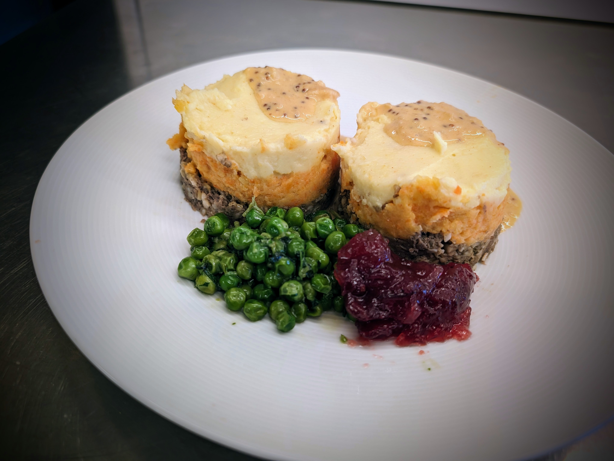

|  | |
| 1400g | goat shank |
| 2 | lamb hearts |
| 2 | lamb tongues |
| 1 lb | menudo |
| 15g | salt |
| 1500ml | water |
| ◇ | |
| 2 | lamb kidneys |
| 1 | lamb liver |
| ◇ | |
| 600g | steel-cut oats |
| 1 | large onion |
| 50g | ghee |
| 15g | salt |
| 8g | peppercorns |
| 3g | coriander |
| 2g | nutmeg |
| 1g | allspice |
| 6 sprigs | thyme |
| 6 sprigs | oregano |
| 500ml | stock |
| 100ml | Scotch whisky |
| ◇ | |
| 30g | butter |
| 20g | ghee |
| 1 | medium onion |
| 1 tsp | bouillon extract |
| 80ml | stock |
| Scotch whisky | |
| 1 tbsp | whole grain mustard |
| 1 tbsp | Dijon mustard |
| 100ml | heavy cream |
| lemon juice | |
| salt | |
| pepper | |
On the day before, boil shank meat, hearts, tongues and menudo in a pressure cooker for about 90min. Don't release steam and let it cool down to room temperature over the next few hours. Remove boiled meats and refrigerate overnight. Save the stock.
Toast the steel-cut oats in a 350°F (175°C) oven for about 20 minutes and wait until cooled back down to room temperature.
Coarsely grind the precooked meat with the uncooked liver and kidneys. Combine with oatmeal, grated onion, ghee, spices, herbs and whisky and about 500ml of the preserved stock. Make sure to use all of the fat that might have floated to the top. This will be a substitute for the more traditional beef suet that is hard to source.
Divide into two portions and fill into 90mm sausage casings. Make sure to remove as much air as possible but only fill about half full. The stuffing will expand considerably.
Steam for 3 hours.
For the gravy, sautee grated onion in butter and ghee over medium heat until most of the moisture has evaporated and the onions have formed a dry paste.
Add bouillon extract and some of the preserved stock and reduce to about half. Add whisky and burn off excess alcohol. Then add mustard and heavy cream and reduce until thickened. Season with lemon juice, salt and pepper to taste.
Serve with mashed potatoes (tatties), mashed rutabaga/carrots (neeps), peas, and/or cranberries.